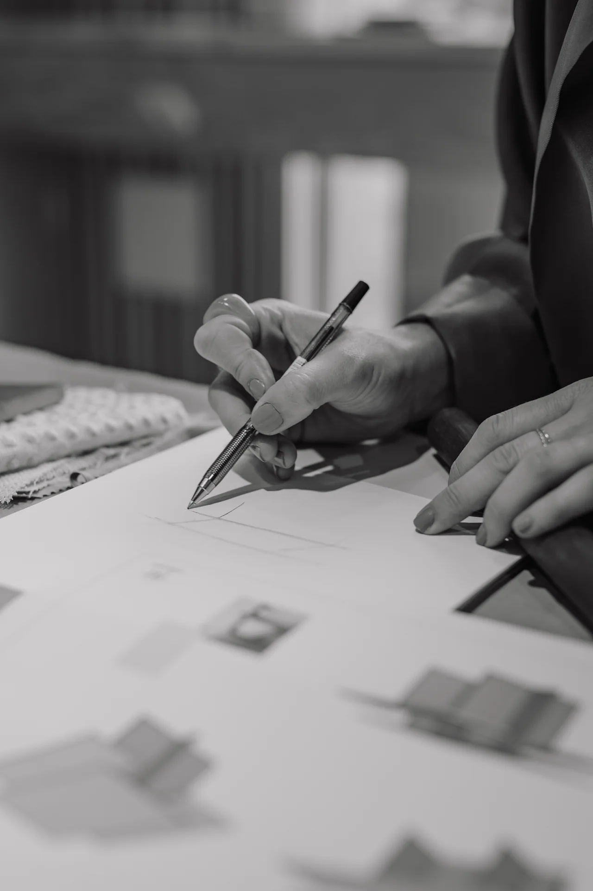

Möbeldesign
Specialritade och platsbyggda möbler som tar vara på rummets möjligheter. Form och funktion får mötas i lösningar som hör hemma i helheten.

Ritat för en bestämd plats.
Ett vitrinskåp som ramar in rummet. Förvaring som smälter in i sovrummet. Arbetsplatser som försvinner när arbetsdagen är slut. PUR formger möbler utifrån hur du vill använda din miljö.
- Platsbyggd förvaring och vitrinskåp
- Möbler som ingår i ett större inredningskoncept
- Särskilda lösningar för rum med flera funktioner

Detaljen som
gör skillnaden.
Genomtänkt förvaring frigör rum. Ett specialritat skåp kan lösa ett praktiskt behov och samtidigt bli en självklar del av inredningen.
Se hur idéerna tagit form i PURs möbelprojekt.
Se det i ett riktigt projekt.
Alla projektSka vi ge din
idé ett rum?
En ny bostad, en plats som behöver förändras eller en möbel som saknas. Berätta vad du tänker.
Prata med Martina